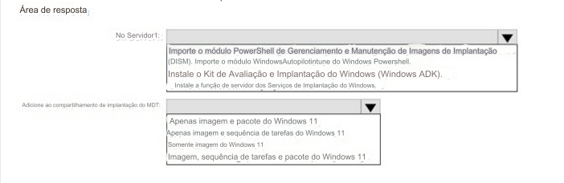

45- PONTO DE ACESSO -
Você tem um servidor chamado Server1 e computadores que executam o Windows 10. Server1 tem o Microsoft
Deployment Toolkit (MDT) instalado.
Você planeja atualizar os computadores Windows 10 para o Windows 11 usando o assistente de implantação do MDT.
Você
precisa criar um compartilhamento de implantação no Server1.
O que você deve fazer no Servidor1 e quais são os componentes mínimos que você deve adicionar ao compartilhamento
de implantação do MDT? Para responder, selecione as opções apropriadas na área
de resposta.
NOTA: Cada seleção correta vale um ponto.
